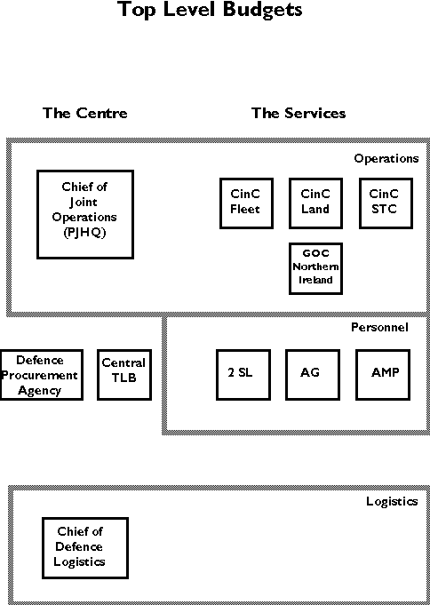
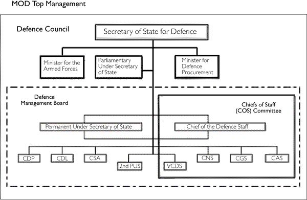

Shrivenham Defence Diplomacy Course
26 March 2001
The Ministry of Defence in Britain is a very unusual department of State. Each of the Departments of State are charged with advising their Government Ministers on policy options, and once political decisions have been made, setting in hand the necessary action to get those decisions carried out. Defence is a prime concern of any Government, but it is one full of uncertainties. Keeping the peace, restoring the peace, or winning a war are activities in which judgement of methods and equipment necessary are extraordinarily difficult.
However the MOD is different from other Departments of State, as they mostly hand over resources to separate independently accountable organisations to provide the output to the customer. Thus the doctors and nurses are employed by health authorities not the Department of Health; dustmen by local authorities and not the Department of the Environment; Chief Constables and their police forces are separate from the Home Office; central bankers work for the Bank of England and not the Treasury. Civil departments keep the representatives of major areas of expenditure at arms length: Department of Trade in its dealings with the CBI, and the Ministry of Agriculture with the farmers. The MOD is different, because it is not just a Department of State, but is also the Headquarters of the 3 armed services, and the Services themselves are intimately involved in all decisions that affect them. Whereas other departments are staffed by Civil Servants providing advice to their Ministers, who are elected politicians, the MOD has military personnel also providing advice.
These military personnel bring to the MOD a body of up to date practical experience on what particular capabilities can and cannot do, and what risks are associated with particular strategies. That is why current operational experience and frequent returns to the front-line are important.
In talking about the relative roles of the civil servant and the military within the MOD, I will spend a little time on how the current structure has come about. This is important partially because it illustrates the strengths and weaknesses of different approaches, and also helps in understanding the complex relationships between the various players. Of course it is an oversimplification to talk only of civil servants and military. While the statistics show just over 100,000 defence civil servants against just over 200,000 military personnel, the numbers involved in policy development from both categories is only a small fraction. Most of the military are out in formations being supported by civilians in a wide range of jobs. Indeed the number of civil servants has dropped from over 300,000 to the 100,000 in the last 25 years as many of the support jobs have been taken over by commercial companies. Some of the civil servants will be scientists engaged on research, some will be involved in procuring new equipment, testing and evaluating it. Others will be involved in legal work or maintaining accounts and writing contracts. I shall not be focusing on these foot soldiers of the civil service. The relationships between them and the troops carrying out the military operations is relatively straightforward. The groups that I will be looking at are those within the MOD HQ and to an extent those in the major subordinate HQ. They are involved in the strategic planning of Defence. So how did the current system evolve?
The search for an efficient method of strategic planning is not new. Florence Nightingale had drawn public attention to the inefficiencies of the bureaucracy of the War Office in the Crimea War:
" a very slow office, an enormously expensive office, a not very efficient office, and one in which the minister's intentions can be entirely negatived by all his sub-departments, and those of each of the subdepartments by every other."
If the War Office was unmanageable internally, neither it nor the Admiralty saw any need to work together. While the Army kept to the land and the Royal Navy kept to the sea, such independence could be made to work for most of the time. However the development of the manned aircraft as a war-winning weapon brought a new dimension to inter-service rivalry. The Royal Flying Corps, established in 1912, followed by the Royal Naval Air Service two years later, ensured that the development of air power in Britain would be characterised by turf wars and a lack of planning coherence. In 1916, Lord Curzon wrote a note for the Cabinet explaining that we had lost mastery of the air:
"The evidence is incontestable that there has been a great lack of co-operation, and a competition, often the reverse of advantageous, between the two services".
He became chairman of a newly formed Air Board, but within five months announced that it was impossible to develop a coherent policy given the attitude of the Admiralty. Aircraft production was concentrated under a single head in 1917. General Smuts was tasked with producing a report on Air Organisation for the Cabinet. This report led to the formation of the Air Ministry and the establishment of the Royal Air Force in 1918. The answer to the inefficiencies of inter-service rivalry in World War 1 was the creation of a third service.
There were those who looked upon the Air Ministry as a device for wartime, and pressed for a return to two departments of State when the war ended. It was fortunate for the fledgling air force that Churchill was appointed as Secretary for War and Air, which allowed him to promote his long held views about the importance of proper management of air power. However, the disputes were now between three rather than two services. In 1936, the post of Minister for Co-ordination of Defence was established with Sir Thomas Inskip as the first incumbent. It was the period where the Air Ministry was the major user of resources for the bomber programme, the Royal Navy had second call on money, and the army was the poor cousin. The Inskip report of 1937 may have changed the priority for spending from offence to defence, but it still left the RAF in the lead with the need to build up air defences.
Churchill's appointment as Prime Minister in May 1940 saw a concerted effort to point all the players in the same direction. Churchill became Minister for Defence and shunted the individual service ministers out of the War Cabinet. He ran defence planning and resource allocation as a Prime Ministerial task. After the war, this centralised control suffered a set back with the establishment of the Cabinet Defence Committee which took its input from the Admiralty, the War Office and the Air Ministry. Although the Minister of Defence was the deputy chairman of the committee, the Chiefs of Staff and the individual ministers sat on the committee and were thus able to bypass him. The individual service ministers had their own appropriations and each service went its own way.
Suez exposed the weaknesses of the divided organisation both in terms of planning and execution, and Prime Minister Macmillan charged Duncan Sandys with sorting it out. In 1958, Sandys' White Paper on defence organisation sought to develop an organisational structure which would make the defence minister responsible for
"formulation and general application of a unified policy relating to the Armed Forces and their requirements."
A new post of Chairman of the Chiefs of Staff had been created in 1956 (Lord Mountbatten claims that he had suggested it to Eden, and this post now became Chief of the Defence Staff. The individual service chiefs retained their right of access to the PM and their individual ministers. This was the time of the Sandys Review, and its projected cutback in manned aircraft for air defences did little to help bed the arrangement down well. Sandys had a remit to cut defence expenditure, and he took little notice of the views of the individual service chiefs. There was perhaps more unity generated by the common dislike of Sandys from each of the services. As a result his proposals were watered down and progress to a unified central control was slowed.
It was not until 1963, that a truly unified Ministry of Defence came into being as a result of the work of Lord Mountbatten who was the second in post as the Chief of Defence Staff (1958 to 1965). Mountbatten argued successfully that the individual service ministries must be abolished if the Defence Minister was ever to be able to take control. This made Peter Thorneycroft the first Secretary of State for Defence, with the individual service ministers reduced to ministers of state who had to act through the Defence Secretary. Mountbatten also intended that the service chiefs would, in a parallel way, tender their advice through the CDS. However the battle fought by the service chiefs was successful and they retained their individual roles and responsibility for military operations The procurement organisation was also formed, and the Defence Operational Requirements Staff came into being in an attempt to get inter-service agreement about longer term plans. The new Ministry of Defence meant that 4 departments of state disappeared (3 services and aviation). The Secretary of State became responsible for all questions of policy and administration of the fighting services. He would have 3 principle advisers: the Chief of the Defence Staff, the Permanent Under Secretary and the Chief Scientific Adviser. So we have here a 3 pronged advisory arrangement to ministers - one military, one policy civil service and one scientific civil service.
The weakening of the power base within the ministry of the individual services has been much slower, but the move from three independent kingdoms to a unified central headquarters has continued from 1970, when the powers of the CDS were increased. The 70s saw little movement in the power struggle between the single services and the central control advocates. It was a difficult time with a succession of financial crises The arrival of Margaret Thatcher as prime Minister in 1979 had a number of effects on defence. The pay awards of the dying Callaghan government were accelerated and defence took a higher priority in government thinking. Nevertheless, Mrs Thatcher was not impressed by the waste and inefficiency of the MOD. She replaced her first Defence Minister, Francis Pym, when he did not seem to be sorting out defence to her satisfaction. John Nott came in charged to shake up the organisation. His Review looked to change the traditional carve up of the cake between the services. Keith Speed, the Navy minister, was sacked when he spoke out against cuts to the Navy, and was not replaced. His was the final death knell for the single service ministers, thus at last severing the direct link between the individual services and Parliament.
Michael Heseltine,who followed John Nott, adopted a radical approach to defence management. His Ministry of Defence Organisational Review was published in 1984. He had grafted on his Management Information for Ministers System (MINIS) which had been developed while he was at the Environment Department. It took little note of the single service sensitivities and was structured on a broadly functional basis. The key change was to the responsibilities of CDS and PUS who became jointly the principal advisers to the Secretary of State. CDS was the adviser for military operations and strategy, while PUS looked after political and financial policy. The VCDS and 4 DCDS posts, the 2nd PUS with the Office of Management and Budget, the CSA and the CDP left a rather small policy role within the MOD for the individual service chiefs, whose boards could provide advice to the centre. The 2nd PUS was a member of all of the service boards to give that linkage. The Chiefs of Staff kept proudly their right of direct access to the Prime Minister
As the Cold War was coming to an end, the happy days of growth in the Defence Budget was also at an end. Whitehall was being transformed by the New Management Strategy, which sought to align financial and management responsibilities. The government was also intent on privatising what it did not need to run, and making semi-independent agencies of activities which did not need direct day to day running from Whitehall. Today there are some 42 of these agencies. Contracting out of activities which had previously been undertaken by servicemen or MOD civilians reduced the number of defence personnel - and also showed how expensive they were. A single commercial bidder would happily provide an operation for all 3 services, where each service may have operated its own previously. The Defence Evaluation and Research Agency brought together tracts of land owned by the services with scientists and analysts who could operate as a defence capability rather than a single service lobby group. Currently this agency is being divided into a core of defence tasks that remain, with the rest becoming a commercial private company.
An internal study, called 'Prospect', was undertaken in 1991 into the need for each senior post. The move to aligning financial and management responsibility meant that the separation of the C-in-Cs from the policy making board members was no longer sustainable. There was also a need to rationalise headquarters to save money and improve efficiency. The Principle Administrative Officers (CFS, QMG and AMSO) were double-hatted as the CinCs of the logistics arms in each service. Likewise,the Principle Personnel Officers (2SL, AG and AMP) became the CinCs of the three personnel/training commands. This had the effect of moving most of the individual service board members out of London. The Procurement Executive was also undergoing changes which meant that the three service Controllers were now downgraded.
The next changes followed rapidly with Malcolm Rifkind's Front Line First defence review. There was very much a theme of joint operations and training throughout the studies. The review was designed to take the logic of the new management strategy further: "there was still a gap to be closed between the principles of Prospect and NMS and current practice" . Prospect had forecast a decrease in MOD London posts from 12,700 in 1990 to 5200 in 1995. Front Line First set a target of 3750 for 1998. The OMB and Defence Staff compartments were to be ended. It would create "a Head Office composed of a unified Central Staff and three small headquarters staffs supporting the individual Chiefs of Staff as heads of their services. Further responsibilities would be delegated to Commands". The FPMG (Financial Planning and Management Group chaired by the PUS) (now called the Defence Management Board) is made clearly the single key policy forum with the Chiefs of Staff Committee as the ultimate source of professional military advice. Front Line First also created a permanent Joint Headquarters at Northwood. Up until then, the appropriate service had provided its operational headquarters for joint operations (the Navy for the Falklands; the RAF for the Gulf War). This was a significant stepping off point for the next stage of rationalisation.
George Robertson, published the new Labour Government's Strategic Defence Review (SDR) in July 1998. The SDR has taken forward the development of the MOD, and reduced the roles of the individual single services, in a number of significant ways. A key innovation is the establishment of the Chief of Defence Logistics post. Each service currently had run the majority of its own logistic support requirements. There was some sharing of the less operationally sensitive common needs, but each service had a large logistic expenditure. Each of the logistics CinCs had a budget of between one and two billion Pounds - over 20% of the defence budget in all. The grouping of the three service logistics commands into a single central joint organisation was therefore a massive change in control of resources. The CDL however remained a military 4 star officer. He is supported by both military and civilian staff.

On the operational side the SDR also made changes designed to improve inter-service co-operation. An important indicator for the future is the making of the Chief of Joint Operations into a Top Level Budget Holder, thus giving him equal status with the 3 service operational CinCs. The development of Joint Rapid Reaction Forces also points the way to the immediately ready forces being under central command, with the single services as second echelon activities.
"The substantial expansion in both the number and types of forces assigned to our Joint Rapid Reaction Forces, and hence the number of operations likely to come under the command of the Permanent Joint Headquarters, has led us to reassess the role of the Chief of Joint Operations.......We will therefore increase the responsibilities of the Chief of Joint Operations."

There are just over 100,000 defence civilians and just over 200,000 military personnel. The civil service has reduced to this number from 300,000 in the past 25 years as many of its roles have been moved to commercial companies. Those that remain include scientists doing research, engineers involved in procurement, testing and evaluation, contract lawyers and accountants. They are the foot soldiers of the civil service with clear tasks to support the military. The policy making staff is a much small number with the MOD having about 3500 people in all. These include clerical staff, so we start coming down to really small numbers of true MOD military and policy staffs, who are there to prepare the advice to Ministers on everything from equipment, personnel, future programme to operational matters. The ministry has to deal with running a war if necessary but also with compensation claims from farmers for livestock damaged by the noise of low flying aircraft.
The MOD has thus changed and evolved over the last century. It only came into being as a unified headquarters in 1963, and it has progressively developed to give unified advice to the elected politicians who in the end make the decisions. There is a need for both military and civil service advice, but the organisation is such that both sections are complementary to each other in the advice they give.
The critical difference between military and civilian role is important. Those who have not worked there sometimes claim that it is wrong that important military decisions are taken by those with no military experience. What the complainant usually means is that he was unable to make his military case in a sufficiently convincing way, either because the case was bad or the argument for it was bad. The civil servant acts as the counterweight to military enthusiasm. He must take into account the finite nature of resources (and he has particular responsibilities in the financial area), the potential political implications of a particular course of action, and the intrinsic merit of a particular line of argument. This is the difficult stage for the military officer, but it is the crucial one. It is no good relying on the line that military judgement is all that matters - "Unless we have 5000 stand-off missiles with a range of 100 miles and a capability to kill 5 tanks per weapon by 2005, we cannot defend the nation". Many civil servants will wish to question that judgement, and put their own specialist non-military colouring on such a proposal. Is there another way to kill tanks? What is the most cost effective way? Do we need to kill tanks? Will the technology work? Will such a proposal distort the defence budget? Why that number, why that distance, why that capability? This is the essential part of the checks and balances which ensure that the Defence budget is kept under control and spent wisely. But it is not just in programming and procurement.
If a military operation is under consideration, military judgement will be crucial, but so also will the wider political considerations provided by our civil service colleagues. The military advice in the MOD will need to consider what capabilities are needed, what are available, what the military risks are, what the options are, and what the likelihood of success is. There will also be many detailed questions at the tactical level, which may need increasingly these days to be considered by Ministers. The civil service staffs will need then to provide the key political and legal aspects in consultation with the FCO to provide Ministers with all the information necessary to come to a decision.
The picture I am trying to develop therefore is one where military and civilian have complementary roles, each using his very different experience to bring together a solution to any problem which is the best advice to Ministers. The structure is not one of competition to give different advice to Ministers, but of working together to provide the best and broadest advice. To this end, we have seen over the years a much greater mixing of civilian and military staffs. For example the Director of Policy in the MOD is a senior civil servant, but his immediate boss is the Vice Chief of Defence Staff, a military man, while he also has both civilian and military staffs working for him. It is not therefore two distinct lines of staffs.
No system is perfect. The main advantage as I see our mix of civil servants and military officers is that each brings a different dimension to the policy advice to Ministers. The Civil Service provide continuity as they will tend to stay in the Ministry for long parts of their careers. The military, if they are to be able to give up to date operational based advice, need to return to the frontline frequently and may spend only 2 years at a time in the Ministry. This has disadvantages in terms of building up effective working relations. There is one other turnover problem which makes life difficult, and that is in the politicians. At any one time the MOD has 4 ministers, but they tend to move on quite quickly, and this makes continuity in policy more difficult as each wishes to make his or her mark in office. However, that is a problem beyond the domains of the military and the civil service.
The greatest advantage is that the system gives very effective civilian political control of the military. In the end the defence policy for the country is what the elected government wish it to be. Both Civil Servant and military staff officer are there to advise ministers how their wishes can be made to work.